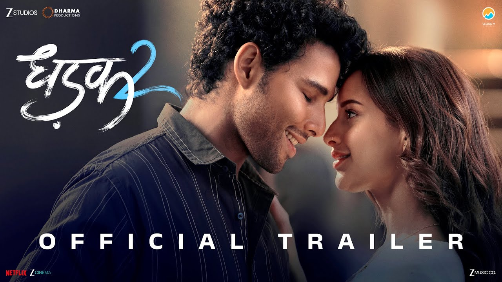

▶ Official Trailer & Video Preview
Dhadak 2 OTT Release: Siddhant Chaturvedi और Triptii Dimri की फिल्म इस दिन ओटीटी पर हुई रिलीज, जानिए पूरी डिटेल्स

सिद्धांत चतुर्वेदी और तृप्ति डिमरी की मुख्य भूमिका वाली रोमांटिक ड्रामा फिल्म 'धड़क 2' सिनेमाघरों के बाद अब ओटीटी प्लेटफॉर्म नेटफ्लिक्स पर दस्तक दे चुकी है। इस फिल्म को सिनेमाघरों में रिलीज के बाद दर्शकों और क्रिटिक्स से मिली-जुली प्रतिक्रिया मिली थी, और अब जो दर्शक इसे थिएटर्स में नहीं देख पाए थे, वे घर बैठे इसका आनंद ले सकते हैं।
## Latest Update
नेटफ्लिक्स इंडिया ने आधिकारिक तौर पर घोषणा कर दी है कि 'धड़क 2' को स्ट्रीमिंग प्लेटफॉर्म पर लाइव कर दिया गया है। फिल्म की रिलीज का ऐलान करते हुए मेकर्स ने सोशल मीडिया पर एक खास पोस्टर शेयर किया था, जिसके साथ कैप्शन लिखा था— "दो दुनिया। दो दिल। और बस एक धड़क।"` यह फिल्म मुख्य रूप से ऑनर किलिंग और जातिगत भेदभाव जैसे गंभीर मुद्दों पर आधारित एक इंटेंस प्रेम कहानी है।
## Release Date
फिल्म 'धड़क 2' ने पहले बड़े पर्दे पर और बाद में डिजिटल प्लेटफॉर्म पर अपनी यात्रा पूरी की है। इसके महत्वपूर्ण डेट्स इस प्रकार हैं:
* **Theatrical Release Date:** 1 अगस्त 2025
* **OTT Release Date:** 26 सितंबर 2025
## Country-wise Release
'धड़क 2' मुख्य रूप से भारतीय दर्शकों को ध्यान में रखकर बनाई गई एक थियेट्रिकल और डिजिटल रिलीज है, जिसे वैश्विक स्तर पर नेटफ्लिक्स के माध्यम से अंतरराष्ट्रीय दर्शकों के लिए भी उपलब्ध कराया गया है।
| Country/Territory | Release Date | Release Type | Status |
| :--- | :--- | :--- | :--- |
| India | 26 September 2025 | OTT (Netflix) | Stream Now |
| International | 26 September 2025 | OTT (Netflix) | Available |
## Story / Plot
'धड़क 2' की कहानी निलेश (सिद्धांत चतुर्वेदी) और विधि (तृप्ति डिमरी) के इर्द-गिर्द घूमती है। निलेश एक दलित युवा है जो अपनी उच्च शिक्षा पूरी करने के लिए एक लॉ कॉलेज में दाखिला लेता है। कॉलेज में उसकी मुलाकात विधि से होती है, जो एक रसूखदार और ऊंचे तबके से ताल्लुक रखती है। दोनों को एक-जैसे हालात और विचारों के बीच प्यार हो जाता है। लेकिन जैसे ही उनका यह रिश्ता समाज के सामने आता है, जातिगत दीवारें और सामाजिक ताने-बाने की残酷 सच्चाइयां उनके रास्ते में रुकावट बनने लगती हैं। कहानी आगे बढ़कर यह दिखाती है कि कैसे यह जोड़ा समाज के कड़े नियमों के खिलाफ जाकर अपने प्यार को बचाने की जद्दोजहद करता है।
## Cast
फिल्म में मुख्य कलाकारों की दमदार जोड़ी नजर आई है:
* **सिद्धांत चतुर्वेदी** - निलेश के किरदार में
* **तृप्ति डिमरी** - विधि के किरदार में
* इसके अलावा अन्य कलाकारों ने भी सहायक भूमिकाओं में अहम प्रभाव छोड़ा है।
## Director / Writer
इस फिल्म का निर्देशन शाजिया इकबाल ने किया है। यह फिल्म निर्देशक मारी सेल्वराज की चर्चित तमिल फिल्म 'परियेरुम पेरुमल' (2018) का आधिकारिक हिंदी रीमेक है, जिसे धर्मा प्रोडक्शंस, ज़ी स्टूडियो और क्लाउड 9 पिक्चर्स के बैनर तले बनाया गया है।
## Trailer / Teaser
फिल्म का ट्रेलर इसके गंभीर विषयों, जातियों के संघर्ष और सिद्धांत-तृप्ति की केमिस्ट्री को बेहतरीन तरीके से बयां करता है। दर्शक इसे आधिकारिक यूट्यूब चैनलों पर देख सकते हैं।
## OTT Details
फिल्म के डिजिटल राइट्स **Netflix** द्वारा खरीदे गए थे। सिनेमाघरों में दो हफ्ते के सफल या सीमित रन के बाद, इसे 26 सितंबर 2025 से नेटफ्लिक्स पर स्ट्रीम किया जा रहा है। सब्सक्रिप्शन धारक इसे हिंदी भाषा में ऑनलाइन देख सकते हैं।
## What's Special / Why Watch
यह फिल्म साल 2018 में आई जान्हवी कपूर और ईशान खट्टर स्टारर फिल्म 'धड़क' का स्पिरिचुअल सीक्वल है, लेकिन इसकी टोन अपने पहले भाग से काफी ज्यादा डार्क, गंभीर और यथार्थवादी है। कमर्शियल मेलोड्रामा से हटकर यह फिल्म समाज की कड़वी सच्चाइयां और सिस्टम की खामियों को उजागर करती है, जो इसे एक मस्ट-वाच बनाती है।
## Franchise Context
साल 2018 की फिल्म 'धड़क' मराठी ब्लॉकबस्टर 'सैराट' की ऑफिशियल रीमेक थी, जो मुख्य रूप से एक आसान और कमर्शियल फ्रेमवर्क पर आधारित थी। इसके विपरीत, 'धड़क 2' जातिगत भेदभाव और सामाजिक असमानता के मुद्दों पर अधिक गहराई से बात करती है, जिस वजह से इसे एक अलग और परिपक्व नैरेटिव माना जा रहा है।
## FAQ
**Q1: 'धड़क 2' किस ओटीटी प्लेटफॉर्म पर रिलीज हुई है?**
A: यह फिल्म नेटफ्लिक्स पर उपलब्ध है।
**Q2: 'धड़क 2' की ओटीटी रिलीज डेट क्या है?**
A: यह फिल्म 26 सितंबर 2025 से नेटफ्लिक्स पर स्ट्रीम हो रही है।
**Q3: फिल्म में मुख्य भूमिका में कौन-कौन हैं?**
A: इसमें सिद्धांत चतुर्वेदी और तृप्ति डिमरी मुख्य लीड रोल में हैं।
**Q4: क्या 'धड़क 2', 2018 की फिल्म 'धड़क' की सीधी कहानी है?**
A: नहीं, यह एक स्टैंडअलोन और स्पिरिचुअल सीक्वल है जिसकी कहानी और किरदार पूरी तरह अलग हैं।
**Q5: फिल्म के निर्देशक कौन हैं?**
A: 'धड़क 2' का निर्देशन शाजिया इकबाल ने किया है।
## Conclusion
'धड़क 2' सिर्फ एक सामान्य प्रेम कहानी नहीं है, बल्कि यह उन वर्जनाओं पर चोट करती है जिन पर अक्सर मुख्यधारा का सिनेमा बात करने से बचता है। थिएटर्स के बाद अब नेटफ्लिक्स पर इसके आने से उन तमाम दर्शकों को राहत मिली है जो इस दमदार कहानी को बड़े पर्दे पर नहीं देख पाए थे। अगर आपको गहरी और सामाजिक मुद्दों से जुड़ी कहानियां पसंद हैं, तो यह वीकेंड वॉच के लिए एक बेहतरीन विकल्प साबित हो सकती है।